Thao tác mở trình quản lý tệp tin File Explorer trên hệ điều hành Windows để bắt đầu làm việc với các tệp tin và thư mục.
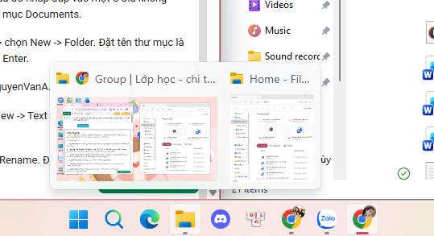
Di chuyển và truy cập vào các ổ đĩa hệ thống (C:, D:, E:...) hoặc các thư mục làm việc mong muốn.
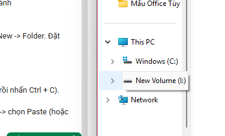
Tạo một thư mục làm việc mới và đặt tên thư mục là ThucHanh_DongHuyenLinh.
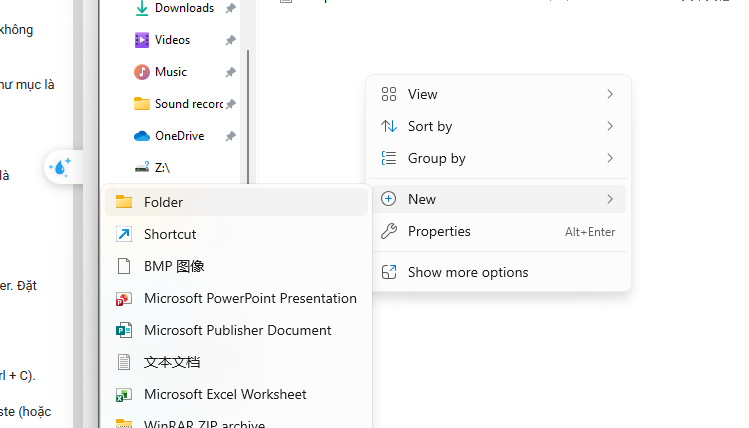
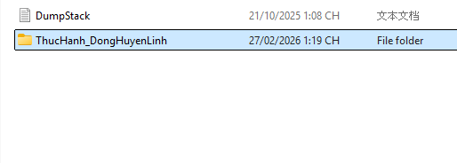
Tạo một tệp tin văn bản (.txt) mới trong thư mục vừa tạo và đặt tên là GhiChu.txt.
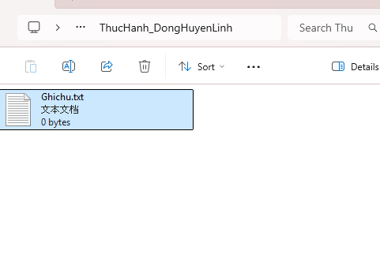
Thực hiện đổi tên tệp tin GhiChu.txt thành GhiChuQuanTrong.txt.
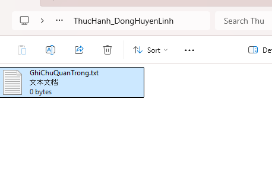
Tạo một thư mục con bên trong thư mục ThucHanh_DongHuyenLinh và đặt tên là TaiLieu.
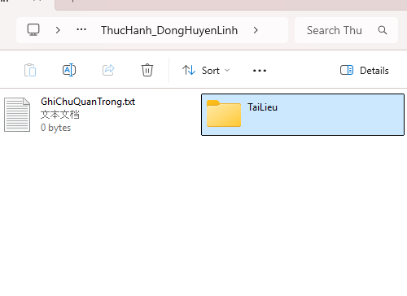
Thực hiện sao chép tệp tin theo các bước:
Ctrl + C).
Ctrl + V).
Kết quả: Bạn sẽ có một bản sao của tệp tin nằm trong thư mục TaiLieu.
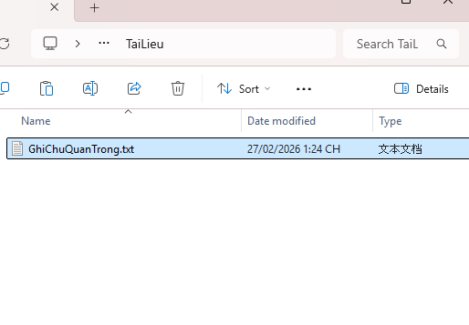
Thực hiện di chuyển tệp tin sang vị trí mới theo các bước:
Ctrl + X).
Ctrl + V).
Kết quả: Tệp tin gốc biến mất khỏi vị trí cũ và chỉ còn tồn tại ở vị trí mới trong thư mục TaiLieu.
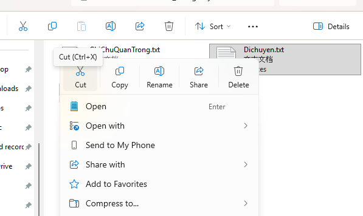
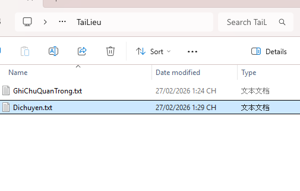
Thực hiện xóa tệp tin để chuyển vào Recycle Bin (Thùng rác) bằng cách
chọn tệp và nhấn phím Delete hoặc nhấp chuột phải chọn biểu
tượng thùng rác.
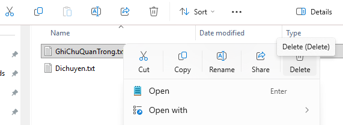
Thực hiện xóa vĩnh viễn tệp tin mà không lưu vào thùng rác bằng cách
chọn tệp tin và nhấn tổ hợp phím Shift + Delete.
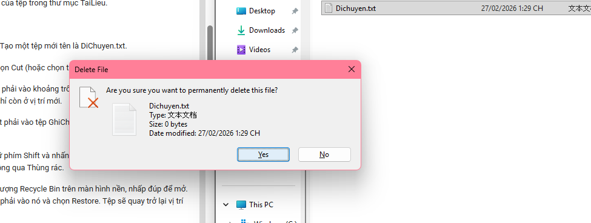
Truy cập vào Recycle Bin, tìm tệp tin đã xóa, nhấp chuột phải và chọn Restore để đưa tệp tin về vị trí ban đầu trước khi bị xóa.
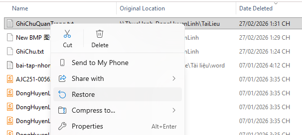